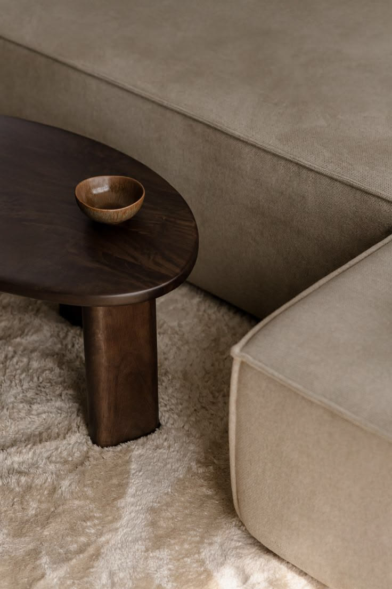
Materiales responsables
Elegí muebles hechos con materiales de origen responsable y menor impacto ambiental.
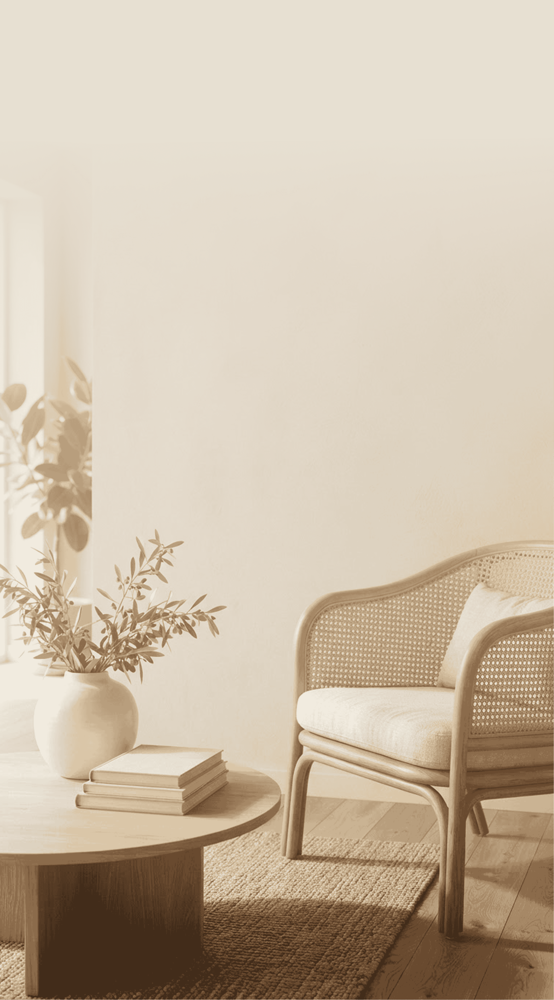

Elegí muebles hechos con materiales de origen responsable y menor impacto ambiental.
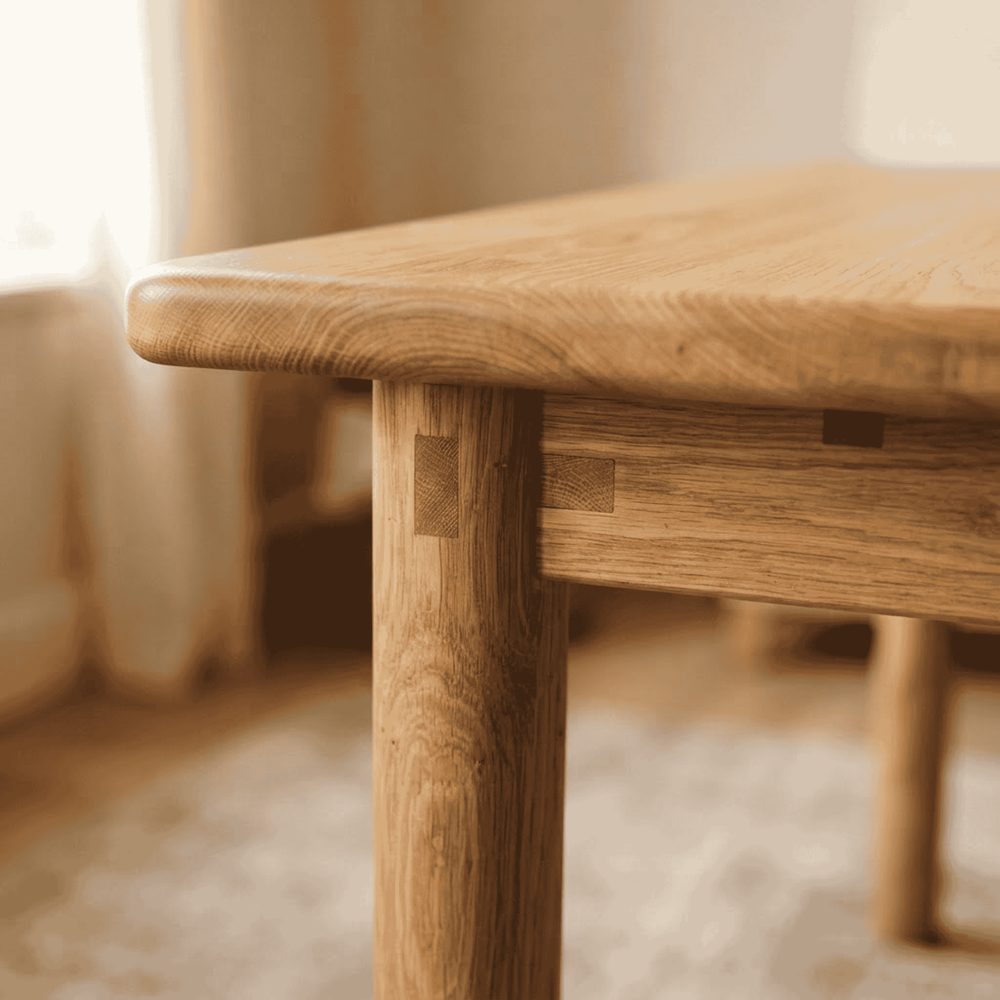
Preferí talleres cercanos: menos transporte y piezas con repuestos más fáciles de conseguir.
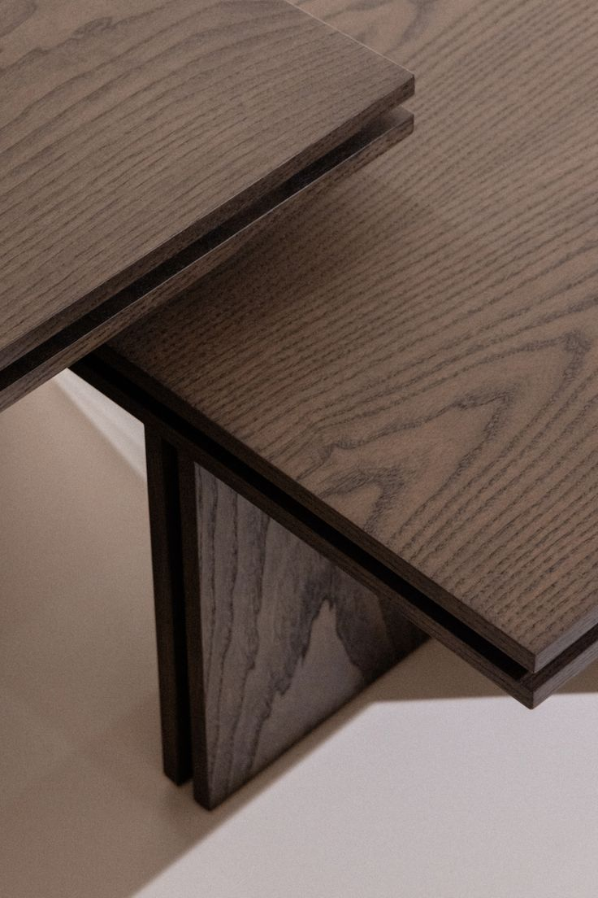
Invertí en piezas duraderas que te acompañen por años y no por temporadas.
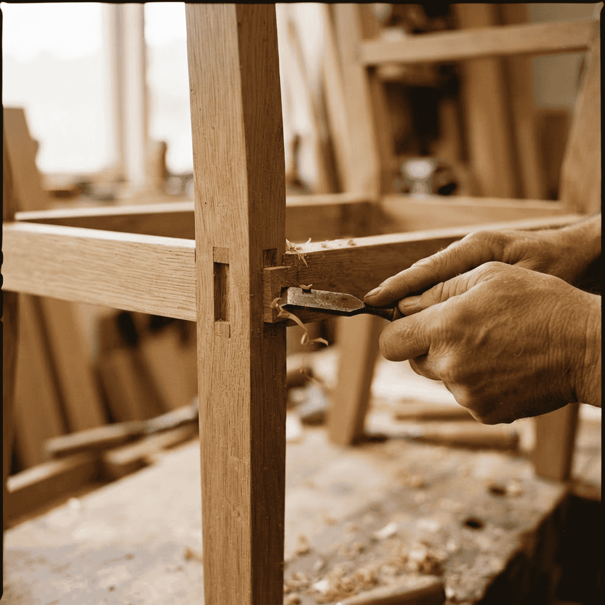
Uniones, tapizados y herrajes que se arreglan en lugar de reemplazar el mueble entero.
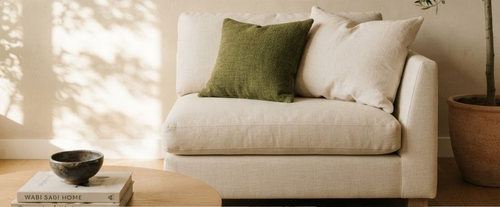
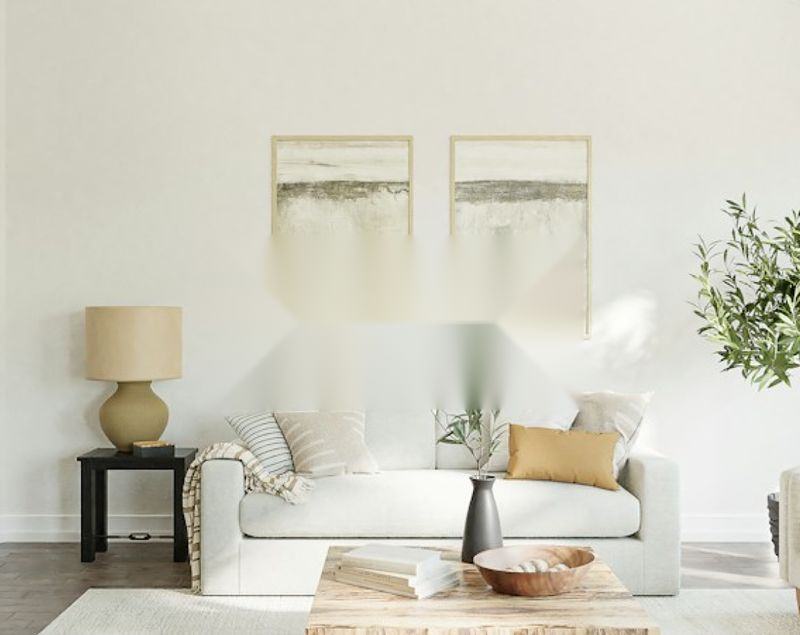
Espacios que perduranUn hogar más consciente
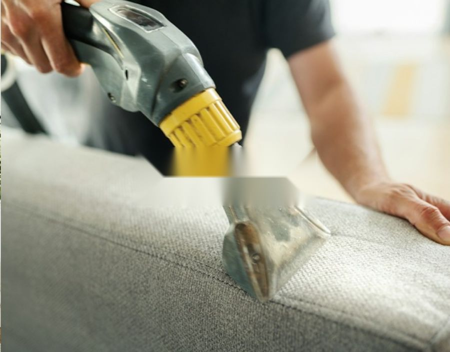
Métodos de limpiezaMétodos de limpieza
Conocé métodos de limpieza efectivos para cuidar cada espacio de tu hogar. Técnicas simples que ayudan a mantener tus muebles y ambientes en mejores condiciones por más tiempo.
Descubrir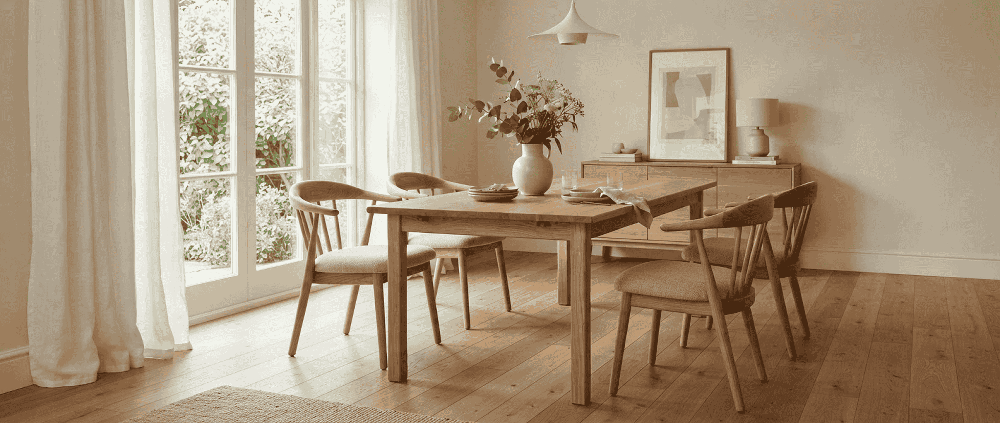
Comedores con historiaMadera certificada, diseño atemporal y producción local. Dura muchos años, asegurada.
Ver más →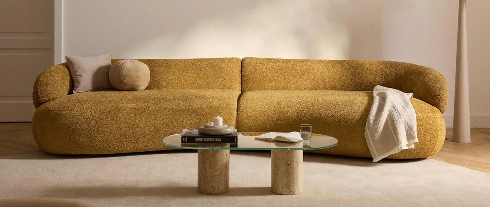
Comedores con historiaCómodo, duradero, fácil de limpiar, con materiales reciclados y con duración asegurada.
Ver más →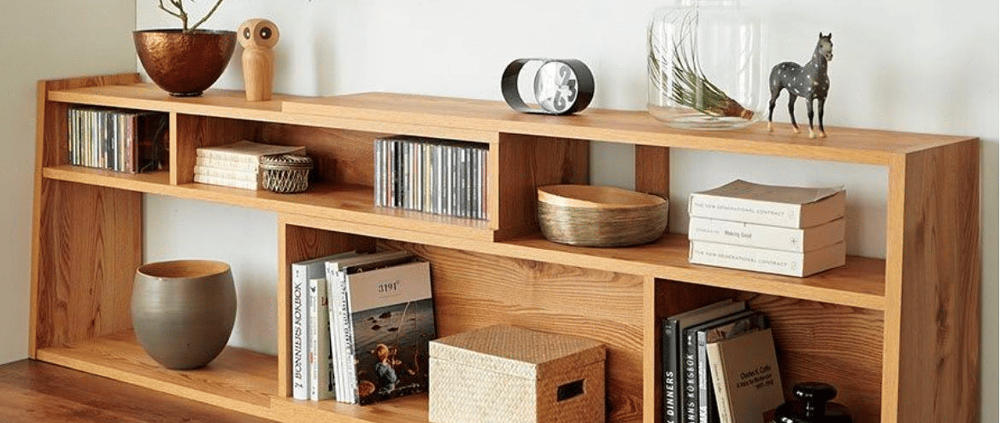
Comedores con historiaModular, de fresno certificado y con herrajes reemplazables. Crece con tu casa y se repara.
Ver más →